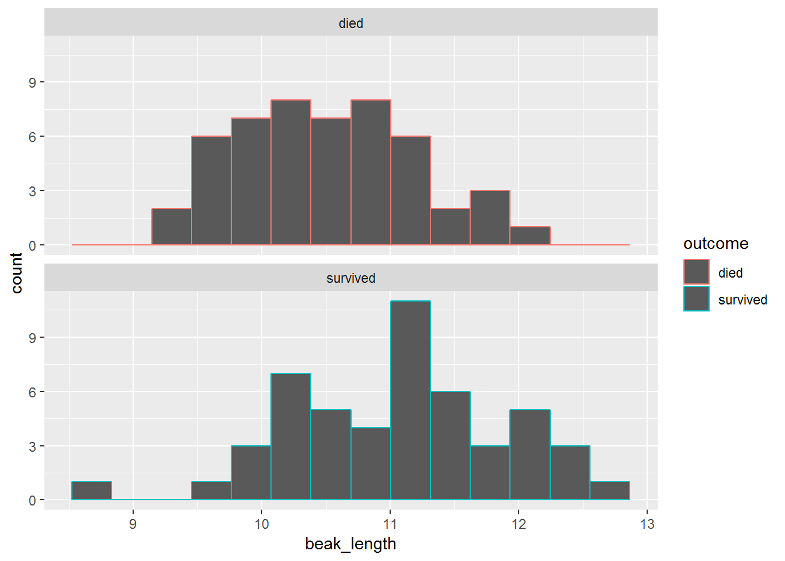
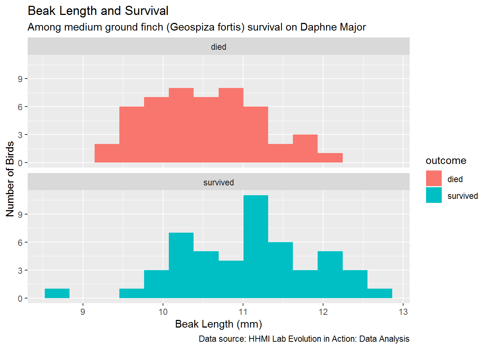

In Part 3 of this lab, you will be introduced to R scripts. You will use the Finches dataset to learn how to read a tabular dataset into R, inspect it, and perform basic statistical summaries on it. You will estimate means, standard deviations, standard errors of the mean, and confidence intervals around the mean. You will also learn how to plot histograms and barplots.
Download the data and save it in the project directory (folder). For example, save it to H:\Lab 1.
This requires installing some packages in R, which let you use functions not found in the standard R installation.
To download package, click the Package tab to the right and click Install. Type the name of the package, tidyverse, and click Install. You only have to do this once on each computer you are using.
Now you’re ready to load the packages.
## Warning: package 'tidyverse' was built under R version 3.5.1## -- Attaching packages -------------------------------------------------------------------------------------- tidyverse 1.2.1 --## v ggplot2 2.2.1.9000 v purrr 0.2.5
## v tibble 1.4.2 v dplyr 0.7.5
## v tidyr 0.8.1 v stringr 1.3.1
## v readr 1.1.1 v forcats 0.3.0## -- Conflicts ----------------------------------------------------------------------------------------- tidyverse_conflicts() --
## x dplyr::filter() masks stats::filter()
## x dplyr::lag() masks stats::lag()Read the data.
## # A tibble: 100 x 12
## band species sex first_adult_year last_year outcome weight wing
## <dbl> <chr> <chr> <dbl> <dbl> <chr> <dbl> <dbl>
## 1 9 Geospiza f~ unkn~ 1975 1977 died 14.5 67
## 2 12 Geospiza f~ fema~ 1975 1977 died 13.5 66
## 3 276 Geospiza f~ unkn~ 1976 1977 died 16.4 64.2
## 4 278 Geospiza f~ unkn~ 1976 1977 died 18.5 67.2
## 5 283 Geospiza f~ male 1976 1977 died 17.4 70.2
## 6 288 Geospiza f~ unkn~ 1976 1977 died 16.3 71.2
## 7 293 Geospiza f~ unkn~ 1976 1977 died 15.7 67.2
## 8 294 Geospiza f~ unkn~ 1976 1977 died 16.8 68.2
## 9 298 Geospiza f~ male 1976 1977 died 15.5 68.2
## 10 307 Geospiza f~ male 1975 1977 died 17.5 70
## # ... with 90 more rows, and 4 more variables: tarsus <dbl>,
## # beak_length <dbl>, beak_depth <dbl>, beak_width <dbl>Explain what they are seeing
Show ways to view the data:
## Observations: 100
## Variables: 12
## $ band <dbl> 9, 12, 276, 278, 283, 288, 293, 294, 298, 307...
## $ species <chr> "Geospiza fortis", "Geospiza fortis", "Geospi...
## $ sex <chr> "unknown", "female", "unknown", "unknown", "m...
## $ first_adult_year <dbl> 1975, 1975, 1976, 1976, 1976, 1976, 1976, 197...
## $ last_year <dbl> 1977, 1977, 1977, 1977, 1977, 1977, 1977, 197...
## $ outcome <chr> "died", "died", "died", "died", "died", "died...
## $ weight <dbl> 14.50, 13.50, 16.44, 18.54, 17.44, 16.34, 15....
## $ wing <dbl> 67.00, 66.00, 64.19, 67.19, 70.19, 71.19, 67....
## $ tarsus <dbl> 18.00, 18.30, 18.47, 19.27, 19.27, 20.27, 17....
## $ beak_length <dbl> 9.20, 9.50, 9.93, 11.13, 12.13, 10.63, 9.93, ...
## $ beak_depth <dbl> 8.3, 7.5, 8.0, 10.6, 11.2, 9.1, 9.5, 10.5, 8....
## $ beak_width <dbl> 8.1, 7.5, 7.6, 9.4, 9.5, 8.8, 8.9, 9.1, 8.2, ...Show ways to view a quick summarize the data
## band species sex first_adult_year
## Min. : 9.0 Length:100 Length:100 Min. :1973
## 1st Qu.: 421.5 Class :character Class :character 1st Qu.:1975
## Median : 613.5 Mode :character Mode :character Median :1975
## Mean :1174.0 Mean :1975
## 3rd Qu.:1588.2 3rd Qu.:1976
## Max. :8191.0 Max. :1976
## last_year outcome weight wing
## Min. :1977 Length:100 Min. :13.00 Min. :64.00
## 1st Qu.:1977 Class :character 1st Qu.:15.00 1st Qu.:67.00
## Median :1978 Mode :character Median :16.24 Median :68.19
## Mean :1978 Mean :16.35 Mean :68.54
## 3rd Qu.:1978 3rd Qu.:17.44 3rd Qu.:70.25
## Max. :1982 Max. :21.24 Max. :74.01
## tarsus beak_length beak_depth beak_width
## Min. :17.05 Min. : 8.70 Min. : 7.500 Min. : 7.400
## 1st Qu.:18.49 1st Qu.:10.20 1st Qu.: 8.795 1st Qu.: 8.200
## Median :19.13 Median :10.80 Median : 9.305 Median : 8.600
## Mean :19.19 Mean :10.79 Mean : 9.392 Mean : 8.641
## 3rd Qu.:20.00 3rd Qu.:11.25 3rd Qu.:10.100 3rd Qu.: 9.055
## Max. :21.06 Max. :12.73 Max. :11.210 Max. :10.070Plot a histogram of the data
 Plot a grouped histogram of the beak depths:

When you’re ready, you can move on to Part 4.